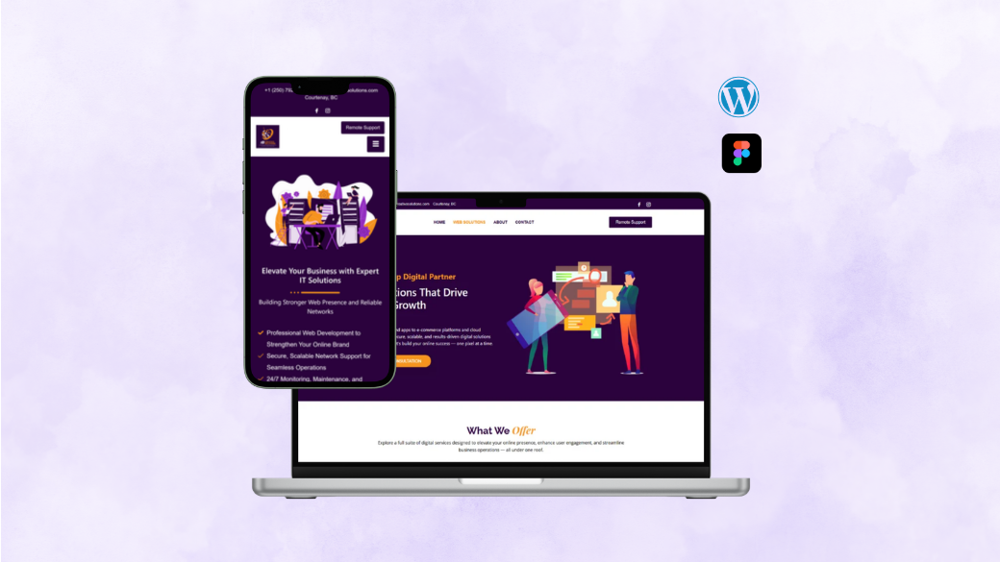
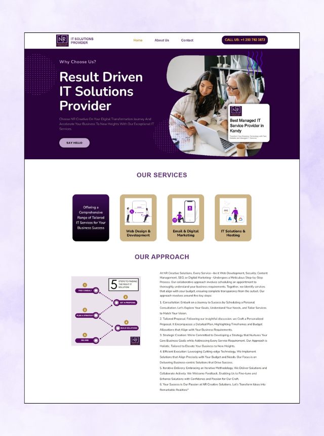
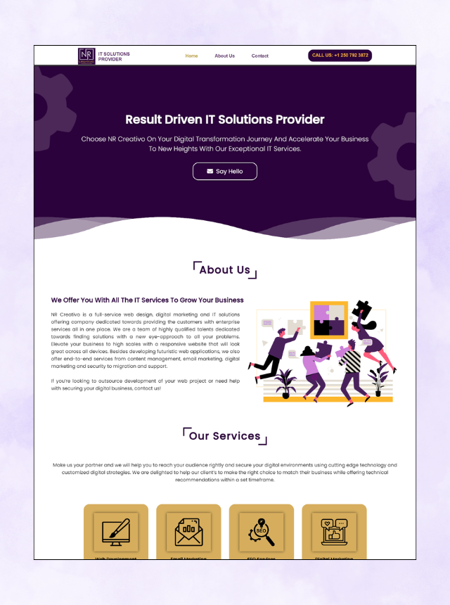
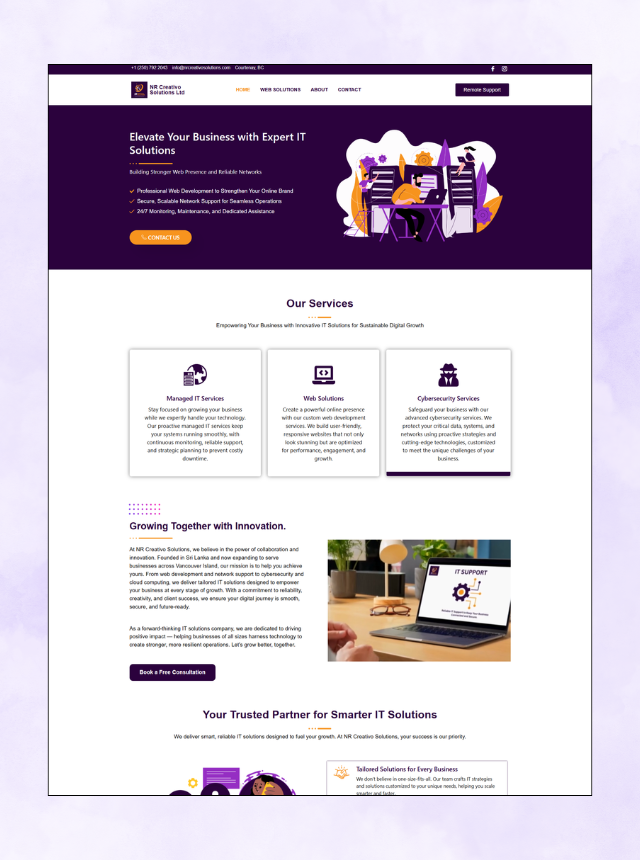
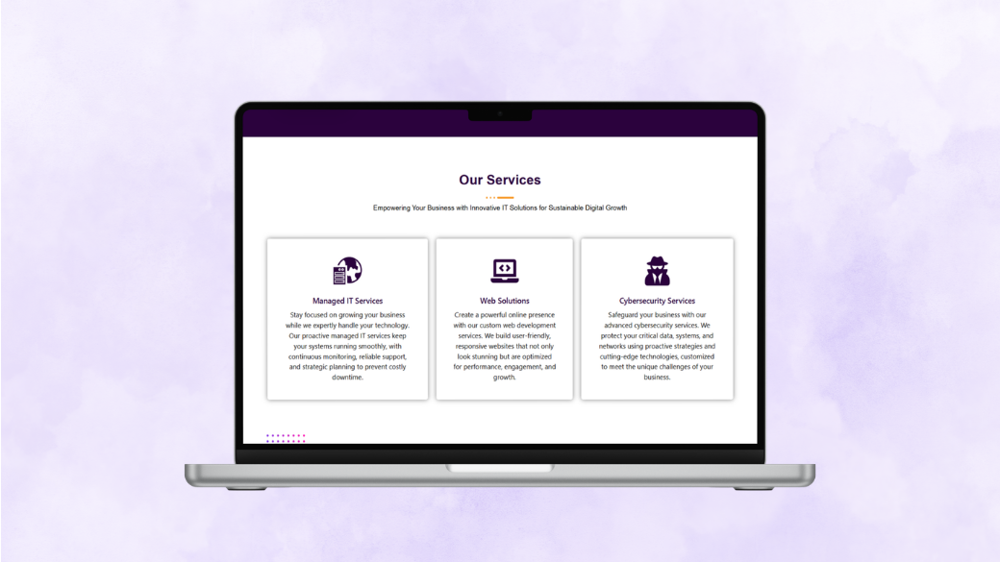
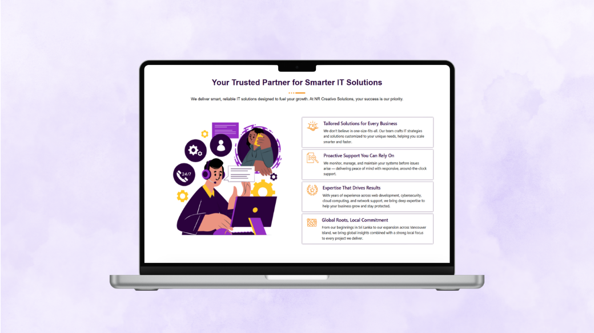
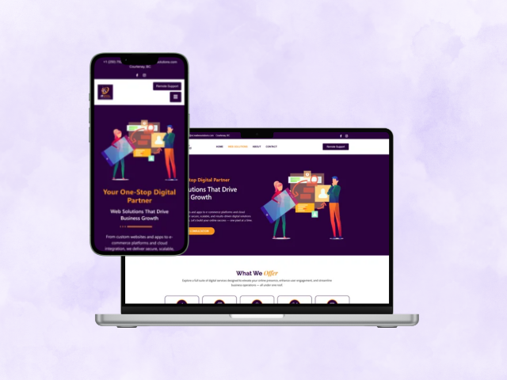
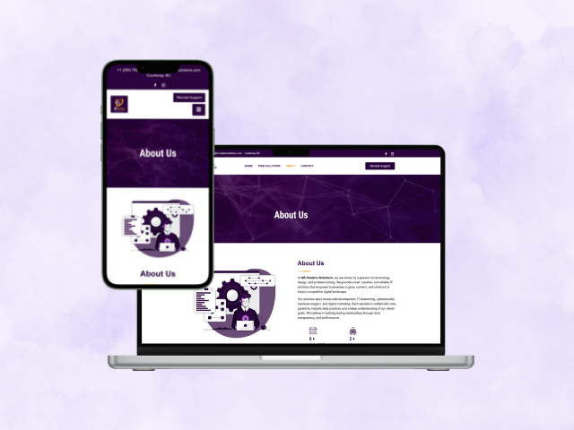
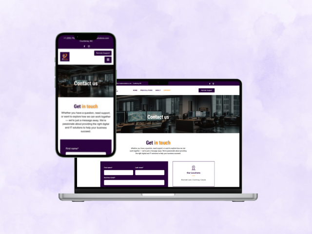
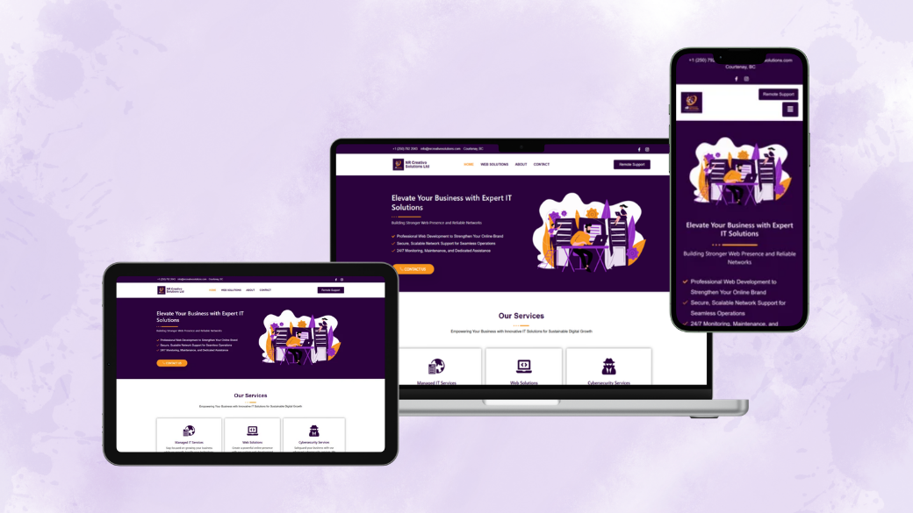

A full website redesign for an IT solutions company — migrating from a custom-coded HTML/CSS site to a modern WordPress/Elementor build with a cleaner visual identity, restructured services, and a stronger professional presence.

💻assets/nrcreativo/cover.pngNR Creativo Solutions Ltd is an IT solutions company founded in Sri Lanka, serving businesses across Vancouver Island. Their services span managed IT, web development, cybersecurity, cloud computing, and network support — a comprehensive offering for small and mid-sized businesses looking to grow their digital presence and protect their operations.
The company came to me with an existing website built in custom HTML and CSS. While functional, the old site had limitations — it required a developer for every content update, the visual design felt dated compared to competitors, and the service structure was harder to navigate than it needed to be. The brief was to redesign the site entirely, migrate to WordPress with Elementor so the client could manage their own content, and create a design that better communicated the company's expertise and professionalism.
This was a freelance project completed alongside my other work. I handled everything: visual design direction, WordPress setup, Elementor page building, content restructuring, SEO configuration, responsive optimisation, and launch.
The original site was hand-coded in HTML and CSS with a purple and gold visual theme. It covered the company's services, approach, and FAQs — but had grown to feel cluttered and hard to maintain. Every content update required going into the code directly, and the layout was becoming outdated compared to modern IT company websites.

🕰️Old homepage
🕰️Old about viewThe redesigned site is built on WordPress with Elementor — giving the client full control over their content through a visual editor, no coding required. The visual identity was completely refreshed: cleaner typography, a professional blue and dark palette replacing the busy purple/gold, and more whitespace throughout to let the content breathe.
Services were distilled from eight loosely defined options into three clear, focused categories: Managed IT Services, Web Solutions, and Cybersecurity Services. Each gets a proper description and its own visual treatment, making it immediately clear what the company offers and who it's for.
The same company, the same services — completely different first impression.

✨AfterThe new homepage was structured as a deliberate top-to-bottom journey — from establishing credibility through to booking a consultation.

🖼️Services section
🖼️Why Choose Us sectionBeyond the homepage, each inner page was designed individually with consistent components and a clear purpose — from detailed service information through to the contact and remote support flows.

🌐Web Solutions
👥About
✉️ContactAll pages were built with Elementor's responsive editor and tested across desktop, tablet, and mobile. The navigation collapses cleanly into a mobile menu, service cards stack vertically, and the hero section remains impactful at all sizes.

Moving from custom HTML/CSS to WordPress with Elementor was the key strategic decision. The old codebase gave fine-grained control but made the client completely dependent on a developer. The new stack gives them a CMS they can actually use — and me a build environment that produces professional results quickly.